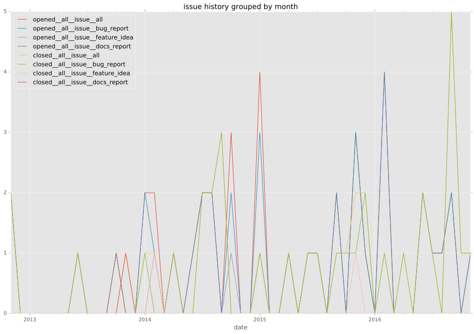

total issue counts
feature pull request: 10
docs report: 1
pullrequest: 56
docs pull request: 1
bugfix pull request: 44
feature idea: 3
issue: 40
new plugin: 1
bug report: 36
issue history

pullrequest history
days open by issue type
bugfix pull request
count: 66
std: 20.4754956166
min: 0
max: 119
median: 1.0
mean: 5.98484848485
all
count: 114
std: 112.441992497
min: 0
max: 638
median: 1.0
mean: 39.4210526316
pullrequest
count: 0
std: nan
min: nan
max: nan
median: nan
mean: nan
docs pull request
count: 2
std: 0.0
min: 0
max: 0
median: 0.0
mean: 0.0
docs report
count: 1
std: nan
min: 23
max: 23
median: 23.0
mean: 23.0
feature pull request
count: 11
std: 80.3221921106
min: 0
max: 272
median: 5.0
mean: 34.6363636364
feature idea
count: 2
std: 219.910208949
min: 0
max: 311
median: 155.5
mean: 155.5
issue
count: 0
std: nan
min: nan
max: nan
median: nan
mean: nan
new plugin
count: 1
std: nan
min: 271
max: 271
median: 271.0
mean: 271.0
bug report
count: 31
std: 183.957925297
min: 0
max: 638
median: 7.0
mean: 100.419354839
closures grouped by total days open